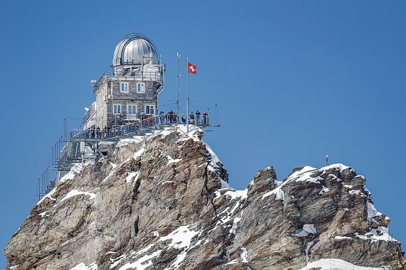
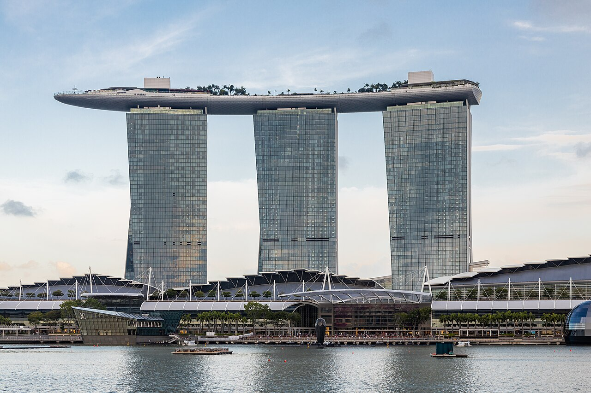

Sabari's travels
One home for all the trips — tap a trip for the full plan, or any day below to jump straight to it.

22 – 30 May 2027 · solo
One backpack, two snow peaks, the Eiffel Tower — on a Swiss Travel Pass Youth before turning 25.

16 – 26 Oct 2026 · family of 8
Marina Bay and the Gardens, a Genting Dream cruise, Batu Caves, the Twin Towers, Genting, Melaka, the Oceanarium, Universal Studios and Bird Paradise.